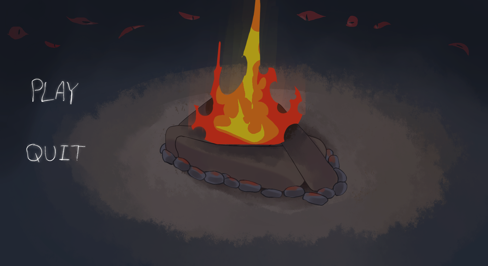
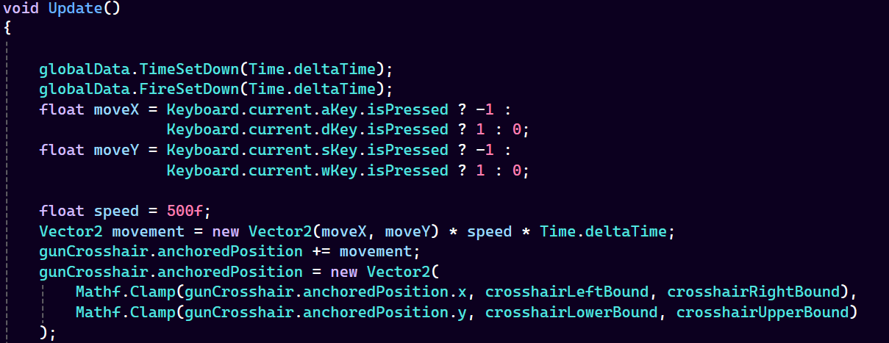
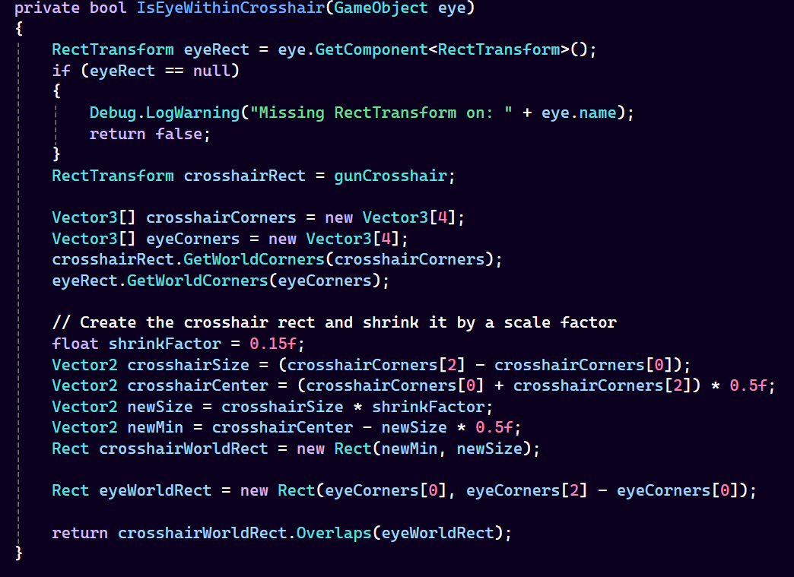
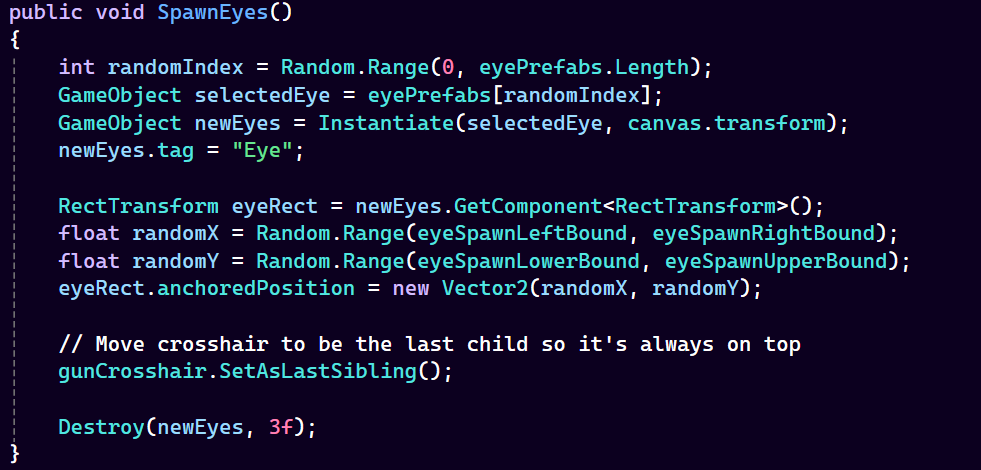
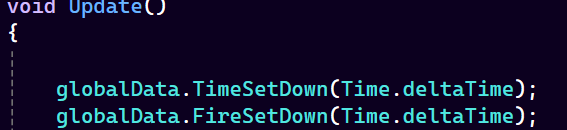

Campfire Cryptid is a survival horror game rapidly prototyped in Unity 6 for the Game Dev Knights Summer 2025 Game Jam, where it won 1st place out of 11 projects and took home the Community Favorite award.
Under a strict 48-hour deadline, I engineered several core gameplay mechanics, including the "Shooting Eyes" minigame designed to fend off enemy attacks.
Utilizing Unity's New Input System, I programmed the crosshair's movement logic. To keep the player's targeting reticle within the playable UI space, I implemented a mathematical clamp function to establish hard boundaries based on the screen's dimensions.

For the hit-detection system, I built a custom collision function that calculates overlaps between UI elements by extracting and comparing the four corners of their respective `RectTransforms`. Additionally, I implemented an automated spawning system that instantiates enemy targets at random vector locations on a strict 1.5-second interval to optimize runtime performance.


To persist data across different scenes and game states, I developed a global data manager. This system successfully tracked critical runtime variables, such as the overarching night countdown timer and the player's remaining fire level.
